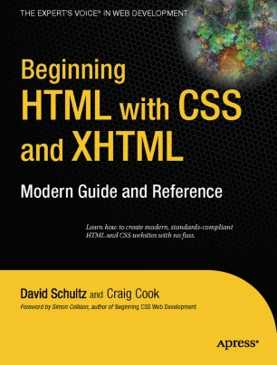
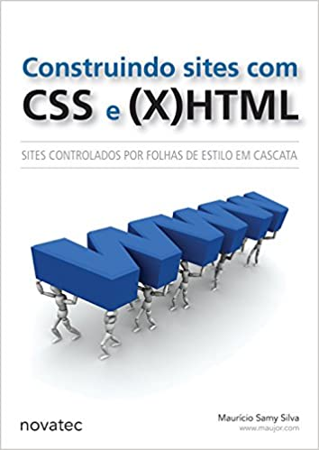

Dia/Horário das aulas:
Terças-feiras, 08:00 – 12:00 (4 aulas)
Terças-feiras, 08:00 – 12:00 (4 aulas)
60 horas
https://meet.google.com/gzh-kizk-yij (autenticar-se com a conta da Unicamp)
Professor e Contato*: Guilherme Palermo Coelho (gpcoelho@unicamp.br)
Matheus Bernardelli de Moraes (m121214@dac.unicamp.br)
use sempre o fórum “Dúvidas sobre a Disciplina”. Sua dúvida pode ser a de outro colega (e até já ter sido respondida). Questões pessoais devem ser tratadas diretamente com o professor (e-mail acima).
Colocar em perspectiva a programação para Web. Capacitar o aluno a compreender as principais linguagens de marcação e estilo. Capacitar o aluno a compreender e desenvolver scripts para execução em navegadores. Capacitar o aluno a compreender e desenvolver scripts para execução em servidores web.
Elaboração de páginas web. Linguagens de marcação. Folhas de estilo. Javascript. Uso de linguagens de programação para geração dinâmica de páginas web. Uso de servidores web para armazenamento de sites. Atividades práticas de implementação de sistemas baseados nessas linguagens.
Schultz, D. & Cook, C. “Beginning HTML with CSS and XHTML – Modern Guide and Reference”. Apress, 2007. DOI: http://dx.doi.org/10.1007/978-1-4302-0350-6 (acesso via VPN/Unicamp).
McPeak, J. & Wilton, P. “Beginning JavaScript®”. 5th. Ed., John Wiley & Son, 2015. Disponível em: http://onlinelibrary.wiley.com/book/10.1002/9781119209423 (acesso via VPN/Unicamp).

Saraiva, M. O. “Desenvolvimento de sistemas com PHP”. SAGAH, 2018. Disponível em: https://integrada.minhabiblioteca.com.br/books/9788595023222 (é necessário cadastro via Unicamp).

W3Schools Online Web Tutorials: https://www.w3schools.com/
Mozilla Developer Network: http://developer.mozilla.org/
Silva, M. S. “Construindo sites com CSS e (X)HTML Sites controlados por folhas de estilo em cascata”. Novatec, 2008.
Silva, M. S. “JavaScript: Guia do Programador”. Novatec, 2010.

Niederauer, J. “Desenvolvendo Websites com PHP”, 2ª ed. Novatec, 2011.

Dall’oglio, P. “PHP: Programando com Orientação a Objetos”, 2a ed. Novatec, 2009.

Seja: